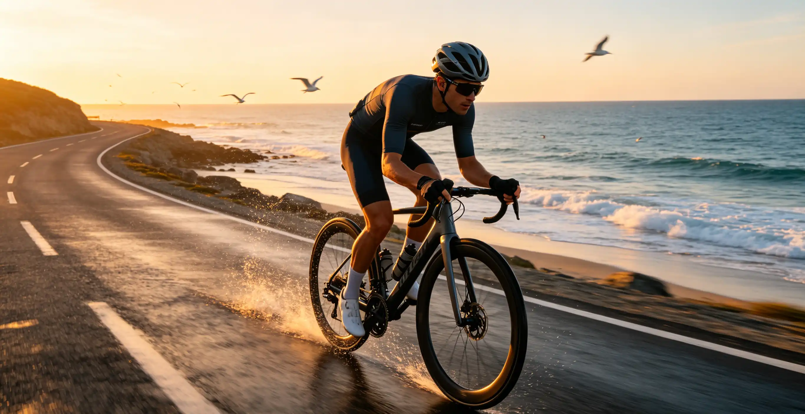

You show up to your first group ride with fresh legs and a new bike, but within 15 minutes, you have already half-wheeled the ride leader, overlapped wheels with the rider ahead, and sprinted through a yellow light that the group was clearly slowing for. Nobody says anything directly, but you feel the tension. Group riding has a dense code of unwritten rules that experienced cyclists absorb over years. This article lays out every one of them—hand signals, paceline mechanics, cornering protocol, and the social norms that keep 20 riders safe at 25 mph.
Essential Hand Signals Every Rider Must Know
Hand signals are the group's shared language. They must be performed early—at least 3 seconds before the hazard—and exaggerated enough to be seen three rows back. The six fundamental signals are:
| Signal | Hand Position | Meaning | When to Use |
|---|---|---|---|
| Point Down (Left or Right) | Index finger aimed at road surface | Pothole, debris, or hazard | Immediately upon spotting |
| Palm Down (Flat Hand) | Hand extended, palm facing ground | Slowing or stopping | 3 seconds before braking |
| Left Arm Out | Straight arm at shoulder height | Left turn | 100 feet before intersection |
| Right Arm Out | Straight arm at shoulder height | Right turn | 100 feet before intersection |
| Elbow Flick | Elbow bent, flicking outward | Obstacle on that side | Parked car, pedestrian |
| Wagging Finger Behind Back | Finger wagging near lower back | Road hazard (UK/European style) | Alternative to point-down |
Verbal calls are equally critical. Standard calls include "Car back!" (vehicle approaching from behind), "Car up!" (vehicle ahead), "Rider up!" (solo rider ahead), "Slowing!" (before braking), "Stopping!" (at intersections), "Clear!" (intersection is safe to cross), "Gravel!" (loose surface), and "Hole!" (pothole). Each call should be relayed through the group—the rider in front calls it, and every rider behind repeats it. In a 20-rider group, the signal should reach the back within 3 seconds. If you are in the middle and you hear a call, you repeat it. Period.
Paceline Mechanics: Single vs. Double vs. Rotating
A paceline reduces energy expenditure for riders behind the leader by 20–30%, depending on speed and wind conditions. Research by Blocken et al. (2018, Journal of Wind Engineering and Industrial Aerodynamics) measured a 35% drag reduction for a rider drafting at 0.5 meters behind another rider at 40 km/h. The three common paceline formats have distinct rules:
Single Paceline: Riders follow directly behind the leader. The leader pulls for 1–3 minutes at a steady effort (typically 20–40 watts above the group average), then pulls off to the left, soft-pedals, and rejoins at the back. When you rotate off the front, do not stop pedaling—just ease off by 50 watts and let the line come past you. Double Paceline: Two parallel lines, typically used on wider roads with 8–16 riders. The left line advances slightly faster than the right. Riders rotate from the front of the left line to the front of the right line, then drift back. This format is more social but requires precise speed matching. Rotating Paceline (Echelon): Used in crosswinds. The line forms diagonally across the road, with each rider positioned slightly to the leeward side of the rider ahead. The rotation is continuous and faster—typically 30–45 seconds per pull. In a crosswind from the right, the line angles from the road's right edge (front) to the center line (back).
Cornering in a Group: The 3 Golden Rules
Cornering is where most group-ride crashes happen. The physics are unforgiving: at 20 mph, a 2-second gap between riders means the fifth rider is 1.5 seconds behind the leader's steering input. Three rules make cornering safe: (1) Signal early. The turn signal must be visible to riders five positions back. Raise your arm at least 100 feet before the turn. (2) Maintain speed through the corner. Do not brake in the turn. Brake before the corner, lean the bike, and pedal through the apex. Braking mid-corner stands the bike up and sends you wide—into the rider beside you. (3) Hold your line. If you enter the corner on the outside, exit on the outside. If you enter on the inside, exit on the inside. Do not drift across the lane. The group's trajectory is a train, not a swarm.
Half-Wheeling, Overlapping, and Other Cardinal Sins
Half-wheeling is when the rider beside you rides with their front wheel half a wheel ahead of yours, subtly (or not so subtly) pushing the pace. It is the group-ride equivalent of passive aggression. The correct behavior: when you are riding two abreast, your handlebars should be aligned with the rider beside you. If you want to increase the pace, say so verbally. Do not half-wheel. Overlapping wheels means your front wheel overlaps the rear wheel of the rider ahead. If that rider swerves, you have zero time to react. Maintain a minimum 6-inch gap between your front wheel and the rear wheel ahead when riding single file, and 12 inches when riding two abreast. Surging—accelerating hard out of corners or over rollers—breaks the group's rhythm. In a paceline, the goal is steady power. The leader should hold their wattage within ±10 watts of the target. If you surge from 200W to 320W every time the road tilts up, you are shelling riders off the back unnecessarily.
The Day I Caused a 6-Rider Crash (And What I Learned)
In July 2022, I was riding with the Tuesday-night fast group out of Conte's Bike Shop in Arlington, Virginia—a 28-mile loop through the rolling hills of McLean with a rotating paceline that averaged 23 mph. I was third wheel and feeling strong. As we approached a sharp left turn onto Kirby Road, the rider ahead of me signaled the turn with a dropped left hand, but I was looking down at my computer, watching my power hover at 240 watts. I missed the signal entirely. I braked hard at the last second, the rider behind me overlapped my rear wheel, and six riders went down. Two cracked carbon frames, one broken collarbone, and a ride that ended in ambulance lights. I was not invited back for three weeks.
That crash cost the group roughly $8,000 in equipment damage and months of recovery for the rider with the broken collarbone. It was entirely preventable. The lesson burned into my brain: in a group ride, your primary responsibility is not to your own speed—it is to the safety of the 20 riders behind you who trust you to be predictable.
Frequently Asked Questions
In a single paceline, 6–18 inches from your front tire to the rear tire ahead is standard. Closer than 6 inches risks overlap; farther than 18 inches reduces the drafting benefit. The aerodynamic sweet spot is 12–18 inches, which provides roughly 30% drag reduction at 25 mph. If you are new, stay at 2–3 feet until you develop comfort with proximity riding.
Who This Is For (And Who It's Not)
Best for: Road cyclists who have been riding solo or with one or two friends and want to join organized group rides. Riders preparing for charity rides, fondos, or club racing where group dynamics are essential.
Not ideal for: Riders who prefer solo riding and have no interest in group dynamics. Triathletes training in aero bars—aero bars are banned from virtually all group rides for safety reasons. Also, if you are recovering from a crash and feel anxious about proximity riding, ease back into it gradually.
First, do not panic or chase at maximal effort—you will blow up. If you are on a no-drop ride, the group will slow or wait at the next regroup point. If it is a drop ride, settle into your own pace, complete the route if you know it, or turn back. Never ride dangerously above your limit to stay with the group. Getting dropped is part of the sport; it happens to everyone.
No. Aero bars are universally banned from group rides. They remove your hands from the brake levers, reduce steering control, and create a rigid projectile in a crash scenario. If you show up with aero bars on a group ride, expect to be asked to remove them or leave. This is non-negotiable across every club and shop ride in the country.
Most shops and clubs categorize rides by average speed: A-group (21–24+ mph), B-group (18–21 mph), C-group (15–18 mph), and D-group (12–15 mph). If you can sustain the listed speed solo for the ride's duration, you can handle the group version, since drafting reduces effort by 20–30%. Start one group slower than you think you can handle—you can always move up.
Minimum kit: two full water bottles, two spare tubes, tire levers, a CO2 inflator with two cartridges (or a mini-pump), a multi-tool, your phone, ID, health insurance card, and $20 cash. Do not rely on others for mechanicals. A group of 20 riders will not wait 15 minutes for you to fix a flat you were unprepared for. Bring a cue sheet or load the route onto your GPS computer beforehand.
No. Bone-conduction headphones like Shokz OpenRun ($129) are sometimes tolerated at low volume because they leave your ears open, but in-ear headphones are dangerous and disrespectful. You need to hear verbal calls ("Car back!"), traffic sounds, and other riders' warnings. If you must listen to music, save it for solo rides.
When overtaking another group, the lead rider should call "On your left!" and the entire group should pass single file on the left. Do not pass on the right, do not split the group you are passing, and do not cut back in front of them until the last rider in your group has cleared. A friendly wave or "thank you" is standard courtesy.
Conclusion
Group riding etiquette is not about arbitrary rules—it is about predictability. When 20 riders know exactly what each signal means, exactly how each paceline rotation works, and exactly what behavior to expect from their peers, the group operates as a single organism moving at 25 mph. The reward is enormous: faster speeds, deeper friendships, and rides that feel effortless in the draft. Your two action items: (1) Memorize the six hand signals above and practice calling hazards out loud on your next solo ride, and (2) Find a local shop ride and join the group one level below your fitness—focus entirely on protocol, not speed, for your first three rides.
Sources: Blocken et al. (2018), "Aerodynamic drag in cycling pelotons," Journal of Wind Engineering and Industrial Aerodynamics; USA Cycling Group Ride Guidelines (2024); League of American Bicyclists Smart Cycling Manual (2023); British Cycling Group Riding Best Practices (2024).